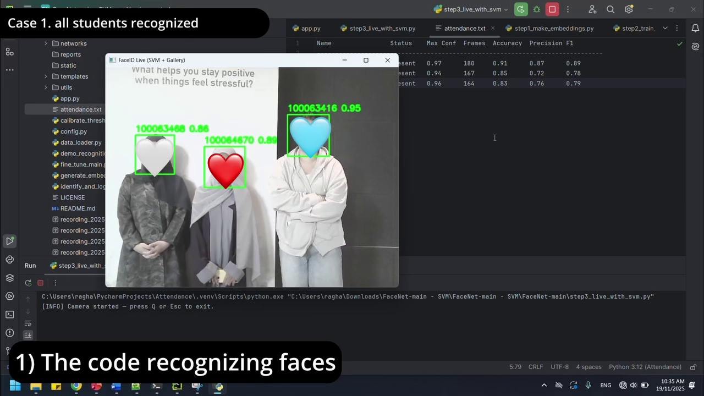

01AI · COMPUTER VISION
Face Recognition Attendance
A live attendance platform that registers students, identifies multiple faces and saves session reports.
- Recognizes multiple students live and rejects unknown faces.
- Connects registration, attendance and session recordings.
- Registration: A mobile-friendly FastAPI portal captures or uploads student photos.
- Recognition: Aligned faces become 512-dimensional FaceNet embeddings, classified by an RBF SVM.
- Reliability: Class balancing, cross-validation, confidence checks and cosine-similarity fallback reduce false matches.
- Output: Each session saves an attendance summary and a timestamped, annotated recording. Earned a 98.5% project grade.